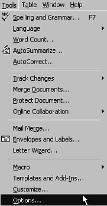
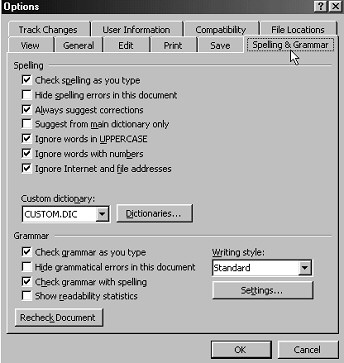

Free
computer Tutorials
|
Free
computer Tutorials
|
|
 home home |
|
||||||
Red and Green Underline in Word |
|||||||
|
Spelling and Grammar in Microsoft WordOne thing you probably will have noticed is the spelling mistakes in the letter. You should have typed the letter exactly as it was, and left any spelling errors in. More than likely, the spelling mistakes are underlined in red in your document. Anything with a wiggly green line under it is a grammatical error, (or what Microsoft Word insists is a grammatical error). You can turn these off and on if you like. To Turn the wiggly red and green lines on and off, do the following. From the menu bar, click on Tools. From the drop down menu, click Options:  You will get a dialogue box popping up. It looks a very daunting dialogue box. Click on the words "Spelling and Grammar" to get the same screen as the one shown:  There's a lot to worry about in that dialogue box! But it is split in to two sections. The top section is for spelling options, and the bottom section is for Grammar. To get rid of the green wiggly lines, the grammar ones, you need to take the tick out of the box next to "Check grammar as you type". To take a tick out of a box, click inside it. To put it back in, click inside the box again. The red wiggly lines, the spelling ones, can be quite useful, so we'll leave them in. Set your spelling options to the one above. In other words, you should have 5 ticks in the spelling section, and only one in the grammar section "Check grammar with spelling". We'll see what that does in a moment. Click OK when you have finished. You should find any green wiggly lines have disappeared, but the red spelling ones are still there.
We'll now get a first look at the Spellchecker. The Microsoft Word Spellchecker --> |